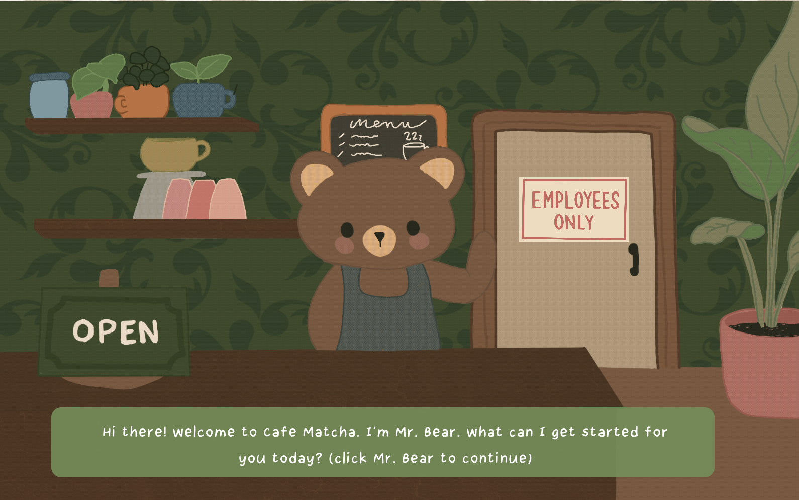
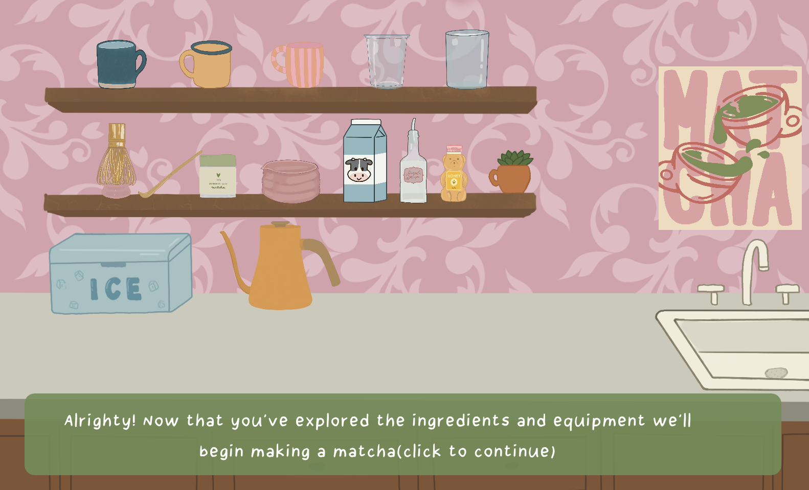
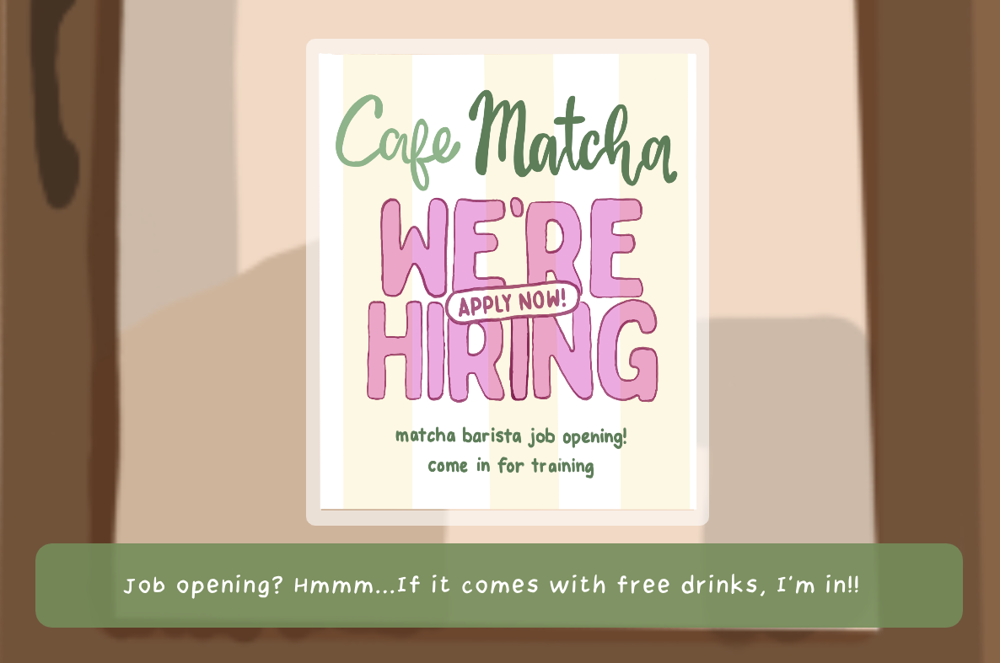

Cafe Matcha (https://gabbywangg.github.io/cafematcha/) is an interactive web narrative game where the player is trained to become a barista at a cafe. The game features a variety of clicking and dragging interactions that guide the player through different tasks. In the beginning, you meet Mr. Bear, who greets you warmly and trains you to become a new employee. The project was created by illustrating scenes in Procreate, designing interactive effects in p5.js, and coding the website in Visual Studio Code.


